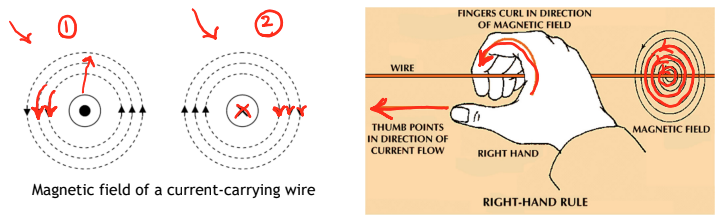
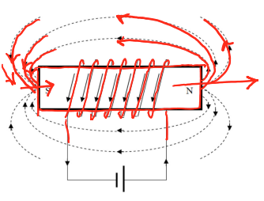
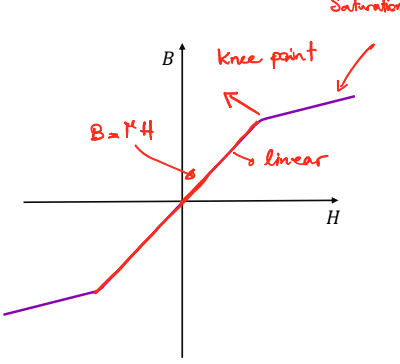
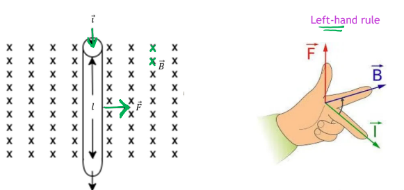

Module topics: Magnetic fields, induced electromagnetic forces, magnetic properties of materials, magnetization characteristics, hysteresis loops, eddy currents, leakage flux, magnetic circuit analysis, Faraday’s law, and Lenz’s law.
Why magnetic fields matter
Magnetic fields allow energy to be converted or transferred in electrical devices:
- Motors: electrical energy → mechanical energy.
- Generators: mechanical energy → electrical energy.
- Transformers: energy transfers between electrical circuits through a changing magnetic field.
A magnetic field can be produced by a permanent magnet or by electric current.
Permanent magnets and magnetic flux
A permanent magnet is a ferromagnetic material that retains its magnetism for a long time after being magnetized. It has a north pole and a south pole.
Magnetic field lines form closed loops:
- Outside the magnet, they travel from north to south.
- Inside the magnet, they return from south to north.
Magnetic flux, represented by , describes the total magnetic field passing through a chosen surface. Field lines are a visualization of flux, rather than physical objects being counted.
Flux versus flux density
Flux describes the total through an area. Flux density describes how concentrated that flux is.
Magnetic field around a current-carrying wire
Current flowing through a straight wire creates a magnetic field in concentric circles around the wire. The field becomes weaker farther from the wire.
Right-hand grip rule for a straight wire
- Point your right thumb along the conventional current direction.
- Your curled fingers show the magnetic field direction around the wire.
| Current direction | Symbol | Magnetic field direction, viewed on the page |
|---|---|---|
| Out of the page, toward you | Counterclockwise | |
| Into the page, away from you | Clockwise |
Think of a dot as the tip of an arrow coming toward you, and a cross as the tail of an arrow going away.

Read arrows carefully
An arrow along the wire indicates current. Circular arrows around it indicate the magnetic field. The field around a straight wire is perpendicular to the wire, rather than pointing along it.
Electromagnets and solenoids
A solenoid is a coil of wire. Current in its turns produces magnetic fields that reinforce one another inside the coil.

The illustrated electromagnet contains:
- A ferromagnetic core.
- A winding with turns.
- A current through the winding.
Its field can be controlled electrically:
- Increasing current generally increases the field, although the core can eventually saturate.
- Increasing the number of turns increases the magnetizing effect for the same current.
- Reversing current reverses the field and swaps the poles.
Right-hand grip rule for a coil
- Curl your right fingers in the direction of current around the turns.
- Your thumb points along the magnetic field inside the coil, toward its north end.
| Application | Thumb represents | Curled fingers represent |
|---|---|---|
| Straight wire | Current | Magnetic field around the wire |
| Coil | Magnetic field inside the coil | Current around the turns |
Hard versus soft magnetic materials
| Material | Main magnetic property | Typical use |
|---|---|---|
| Hard magnetic | Retains magnetism and resists demagnetization | Permanent magnets |
| Soft magnetic | Easily magnetized and demagnetized | Transformer and electric-machine cores |
Soft magnetic materials are useful when the field must follow changes in the winding current. Here, “hard” and “soft” describe magnetic behaviour, not mechanical hardness.
Magnetic flux density: B
Magnetic flux density describes the amount of flux per unit area. For a uniform field perpendicular to the cross section:
Equivalently:
| Symbol | Meaning | SI unit |
|---|---|---|
| Magnetic flux density | Tesla (T) | |
| Magnetic flux | Weber (Wb) | |
| Cross-sectional area perpendicular to the flux | Square metre () |
For a fixed flux, a smaller area gives a larger flux density: the same flux is more concentrated.
Choosing the area
Imagine cutting straight across the path of the flux. The exposed face is the cross-sectional area.
- Vertical flux in a core leg: area = leg width × core depth.
- Horizontal flux in a top or bottom section: area = section thickness × core depth.
Magnetic field intensity: H
Magnetic field intensity, , describes the magnetizing effort produced by current.
Its unit is A/m, often written ampere-turns per metre in winding calculations.
Ampère’s law
For the magnetic-circuit conditions considered here:
This means: add up the component of along a complete closed path. The result equals the net current linked by that path.
If the path links turns, each carrying current in the same winding sense:
If is tangent to the path and approximately constant along it:
Since the total path length is :
| Symbol | Meaning | Unit |
|---|---|---|
| Number of winding turns | Turns | |
| Current in the winding | A | |
| Mean magnetic path length | m | |
| Magnetic field intensity | A/m |
The product is called magnetomotive force (MMF). The same current is counted times because the magnetic path links turns; it does not mean the wire itself carries amperes.
Mean magnetic path length
Measure along the centreline of the core, halfway between its inner and outer edges.
For a rectangular vertical leg:
The half-thicknesses appear because the path turns at the middle of the top and bottom sections.
When H is not uniform
Do not assign the same to every section of a core with different areas or an air gap. Apply Ampère’s law section by section:
Distinguishing flux, flux density, and field intensity
| Quantity | Question it answers | Key relation |
|---|---|---|
| Flux | How much magnetic flux passes through the section? | |
| Flux density | How concentrated is the flux? | |
| Field intensity | How much magnetizing effort is applied per unit path length? | for a uniform path |
Magnetic circuits and magnetomotive force
A magnetic circuit provides a path for magnetic flux, usually through a ferromagnetic core. Current in a winding creates the magnetomotive force (MMF) that establishes this flux.
For a uniform magnetic path:
MMF is measured in ampere-turns (A·turns). It represents the total magnetizing effort, while represents the effort per unit path length.
Most flux follows the core because the core offers much less reluctance than the surrounding air. Assuming all flux stays in the core is an idealization; some leakage occurs in practice.
Analogy with an electric circuit
| Electric circuit | Magnetic circuit |
|---|---|
| EMF or voltage | MMF |
| Current | Flux |
| Resistance | Reluctance |
This analogy helps with calculations, but magnetic flux is not a flow of particles like electric current.
Reluctance and permeability
Reluctance describes how strongly a magnetic path opposes the establishment of flux.
Therefore:
For a uniform section:
| Symbol | Meaning | Unit |
|---|---|---|
| Reluctance | A·turns/Wb | |
| Mean magnetic path length | m | |
| Cross-sectional area perpendicular to flux | ||
| Permeability of the material | H/m |
Permeability describes how readily a material supports magnetic flux:
- : permeability of free space; use in these calculations.
- : relative permeability, a dimensionless material property.
- For air, , so .
| Change, with other quantities fixed | Effect on reluctance |
|---|---|
| Longer path | Increases |
| Larger cross-sectional area | Decreases |
| Higher permeability | Decreases |
Why use an iron core?
High permeability gives low reluctance, allowing a larger flux for the same coil MMF.
For a fixed geometry, reluctance is approximately constant in non-magnetic materials such as air. In ferromagnetic materials, permeability changes with the magnetic operating point, so reluctance is generally not constant.
Magnetization characteristics: the B–H curve
The magnetization characteristic describes the relationship between applied field intensity and the resulting flux density .
Combining the magnetic-circuit equations:
A material with high permeability can produce a large from a relatively small .
Non-magnetic versus ferromagnetic materials
| Property | Non-magnetic material, such as air | Ferromagnetic material |
|---|---|---|
| – relationship | Approximately linear | Generally nonlinear |
| Permeability | Small and approximately constant | High in the useful region; varies with operating point |
| Flux density for the same | Small | Usually much larger |
For a linear material, the slope of the – line equals . For a nonlinear material, gives the permeability at the chosen operating point; the local tangent slope describes the response to a small change in .
Magnetic domains and saturation
Ferromagnetic materials contain small regions called magnetic domains, each behaving like a tiny magnet.
- In an unmagnetized material, domains point in different directions, largely cancelling their effects.
- Applying current to a coil creates a magnetizing field that encourages alignment with that field.
- Increasing current increases alignment and flux density.
- Once most domains are aligned, the core approaches saturation.
Saturation
In saturation, a large increase in current or produces only a small increase in . The curve becomes much flatter; does not become perfectly constant.
Regions of the magnetization curve
| Region | Behaviour |
|---|---|
| Approximately linear region | increases strongly with ; permeability can be approximated as constant over this region |
| Knee | Transition where the curve starts flattening |
| Saturation region | Additional produces relatively little additional |

Electric machines often operate near the knee to achieve high flux density while avoiding deep saturation. High flux helps produce motor torque or generator EMF, but increasing current far into saturation gives little additional magnetic benefit.
Using a magnetization curve in calculations
When permeability is not given as constant, use the material’s curve. For a uniform core without an air gap:
- Calculate the field intensity:
- Read the corresponding from the curve.
- Calculate the flux:
If relative permeability at that operating point is required:
This value applies at the selected operating point; it is not necessarily valid elsewhere on the curve.
Hysteresis loop
In AC machines and transformers, the winding current changes with time, so the magnetic field intensity and flux density also change.
For an ideal non-magnetic material, follows along the same straight line as the field increases and decreases. For a ferromagnetic material, depends on both the present value of and the material’s previous magnetization. This magnetic memory is called hysteresis.
Reading the loop
Starting from positive saturation:
- Reduce to zero: some flux density remains, called remanence or residual flux density, .
- Apply a reverse field: reaches zero at , where is the magnitude of the coercive field.
- Increase the reverse field: the material approaches negative saturation.
- Bring back to zero: a negative residual flux density remains.
- Apply a positive field: reaches zero at , then rises toward positive saturation.
The material traces a complete loop during each steady AC excitation cycle.
Removing current does not necessarily remove magnetism
At , a previously magnetized core can still have nonzero . A reverse field is required to bring to zero on the hysteresis loop.
Residual magnetism can help initiate voltage build-up in some self-excited generators.
Hysteresis losses
Reversing the magnetization requires energy. Some of this energy is not recovered when the field is reduced and is dissipated as heat.
The area enclosed by the B–H loop represents energy lost per cycle per unit volume. A larger loop means greater loss.
| Material | Hysteresis behaviour | Typical use |
|---|---|---|
| Soft magnetic | Narrow loop; low coercive field; easier to reverse magnetization | Transformer and motor cores |
| Hard magnetic | Wider loop; resists demagnetization; retains magnetism | Permanent magnets |
The lecture’s empirical hysteresis power-loss model is:
| Symbol | Meaning |
|---|---|
| Hysteresis power loss (W) | |
| Material-dependent hysteresis constant | |
| Core volume (), not voltage | |
| Peak flux density (T) | |
| Excitation frequency (Hz) | |
| Empirical material exponent, typically 1.5–2.5 |
At fixed peak flux density, doubling the frequency doubles the hysteresis power loss: the core goes through twice as many cycles per second.
Eddy currents and eddy-current losses
Eddy currents are circulating electrical currents induced inside a conducting core by a changing magnetic flux.
Their origin is:
- AC winding current produces changing flux.
- Changing flux induces an EMF in the core material (Faraday’s law).
- Because the core conducts electricity, this EMF drives circulating currents.
- The core’s resistance causes heating.
The current loops lie in planes approximately perpendicular to the magnetic flux. Their magnetic fields oppose the change in flux that caused them (Lenz’s law).
Reducing eddy currents with laminations
AC machine and transformer cores commonly use thin steel sheets called laminations, electrically insulated from one another by varnish or another insulating layer.
- The insulation interrupts large current loops through the core.
- Thin sheets restrict the size of the remaining loops, reducing heating.
- The main magnetic flux travels approximately parallel to the broad faces of the sheets.
- The slides give a typical sheet thickness of 0.35–0.5 mm.
The eddy-current loss model is:
Here, is a material-dependent constant, is core volume, and is lamination thickness, not time.
Total core losses
In the lecture’s model:
| Loss | Main cause | Main way to reduce it |
|---|---|---|
| Hysteresis | Repeated reversal of magnetization | Choose soft magnetic material with a narrow loop |
| Eddy currents | Currents induced within the conducting core | Use thin, electrically insulated laminations |
Both losses heat the core. Higher flux density or frequency can increase heating beyond the device’s design limits.
Useful scaling relationships
Holding all other quantities constant:
| Change | Hysteresis loss | Eddy-current loss |
|---|---|---|
| Double frequency | ||
| Double peak flux density | ||
| Halve lamination thickness | Unchanged in this model |
Check what stays constant
The frequency comparisons assume stays fixed. If changing frequency also changes flux density, account for both effects.
Leakage flux
Leakage flux follows a path outside the intended main magnetic circuit, often closing through air near the winding instead of following the complete core path.
- Not all flux produced by the winding contributes to the useful main flux.
- Leakage can increase the excitation needed to obtain a specified useful flux in a practical magnetic circuit.
- Placing windings close to the core, including in slots in electric machines, helps reduce leakage.
In a simple flux accounting model:
Fringing at an air gap
Fringing is the outward spreading of the main magnetic field as it crosses an air gap. It increases the gap’s effective cross-sectional area:
Neglecting leakage, the same main flux passes through the core and gap:
Therefore, the average gap flux density is lower:
| Effect | What happens |
|---|---|
| Leakage | Flux takes an alternative path outside the complete main circuit |
| Fringing | Main flux spreads outward while crossing an air gap |
Larger gaps generally make leakage and fringing more significant. Keeping gaps small limits these effects and reduces gap reluctance.
Accounting for fringing
For a rectangular core cross section with width , depth , and gap length , the lecture uses the approximation:
If a question instead specifies a percentage increase, use that directly. For example, a 5% increase gives:
Use the effective area for gap reluctance and gap flux density. Continue using the physical core area for the iron.
Magnetic circuit analysis
Magnetic circuits can be analysed using rules analogous to electric circuits.
| Electric quantity | Magnetic counterpart |
|---|---|
| Voltage | MMF |
| Current | Flux |
| Resistance | Reluctance |
| Current density | Flux density |
| Electric field intensity | Magnetic field intensity |
| Conductivity | Permeability |
The magnetic equivalent of Ohm’s law is:
Series paths
With negligible leakage, sections in series carry the same flux, and their reluctances add:
Their flux densities can differ if their areas differ:
Parallel paths
Flux splits between branches. Parallel branches have the same MMF drop:
For two branches:
The branch with lower reluctance carries more flux.
Magnetic equivalents of KCL and KVL
At a junction: total incoming flux equals total outgoing flux.
Around a closed path: applied MMF equals the sum of MMF drops.
Coils that drive flux in the same circulation direction have adding MMFs; opposing coils have subtracting MMFs.
Linear versus nonlinear analysis
Treat reluctances as fixed only when permeability is assumed constant. For a nonlinear core, use its B–H curve to determine each section’s and apply the MMF balance.
Magnetic circuit with an air gap
For one core path and one air gap, neglecting leakage:
The core and gap are in series:
Then:
If the required flux is given, solve for current:
Because air has much lower permeability than iron, even a short gap can contribute substantial reluctance. Adding a gap therefore decreases flux at fixed current, or requires more current to maintain the same flux.
Calculation checklist
- Convert lengths to metres and areas to square metres.
- Use centreline lengths for the magnetic path.
- If the mean path includes a gap, subtract its length to obtain the iron-only length .
- Use for iron and for air.
- Include every gap encountered along the chosen path.
- Apply fringing corrections to the gap area only.
Why air gaps are used
Air gaps are necessary in rotating electric machines to provide clearance between the rotor (rotating part) and stator (stationary part).
They can also be added intentionally to make the overall flux–current relationship more nearly linear over a wider current range. The gap adds an approximately constant reluctance, making the total reluctance less sensitive to changes in the core’s permeability.
Effect of an air gap
A gap requires more MMF to produce the same flux. It does not change the iron’s intrinsic B–H curve or eliminate saturation; it allows a larger current before the core reaches a given flux density.
Induced electromotive force (EMF)
Electromotive force (EMF) is an induced voltage, measured in volts, despite the word “force” in its name.
| Mechanism | What produces the EMF? | Example |
|---|---|---|
| Changing flux through a stationary winding | Time-varying magnetic field | Transformer; stationary stator windings exposed to a rotating field in a synchronous generator |
| Motion of a conductor through a field | Magnetic force on charges moving with the conductor | Motional EMF in a generator |
A synchronous generator still involves mechanical rotation; its stationary windings experience a changing magnetic field because the rotor turns.
Faraday’s law of induction
A changing magnetic flux linking a coil induces a voltage:
Flux linkage accounts for the number of turns linked by the flux:
This assumes the same flux links every turn and is constant.
| Symbol | Meaning | Unit |
|---|---|---|
| Induced EMF | V | |
| Number of turns | Turns | |
| Flux through each turn | Wb | |
| Flux linkage | Wb·turns | |
| Rate of change of flux | Wb/s |
- More turns give more induced voltage for the same flux-change rate.
- Faster flux change gives a larger induced voltage.
- Constant flux linkage produces zero induced EMF, even if the flux is large.
For a linear change in flux over a time interval:
Lenz’s law
The induced voltage has a polarity such that, if the circuit is closed, the resulting current produces a magnetic field that opposes the change in the original flux.
| Original flux | Induced field acts to… | Direction relative to the original field |
|---|---|---|
| Increasing in magnitude | Resist the increase | Opposite |
| Decreasing in magnitude | Resist the decrease | Same |
| Constant linkage | No induction from flux change | No induced EMF |
Opposes the change, not always the field
If the original field is decreasing, the induced field supports it to resist that decrease.
To determine the induced current direction:
- Identify the original flux direction.
- Determine whether its magnitude is increasing or decreasing.
- Choose the induced field direction that opposes that change.
- Apply the coil right-hand grip rule to find the current direction.
An open-circuit coil can have an induced voltage even though no sustained load current flows.
Motional EMF
When a conductor moves through a magnetic field, magnetic forces separate its positive and negative charges, creating a voltage between its ends.
The magnetic force on a positive charge follows:
For a straight conductor in a uniform field and moving with uniform velocity, the motional EMF along its directed length is:
When velocity, field, and conductor length are mutually perpendicular:
| Symbol | Meaning | Unit |
|---|---|---|
| Magnetic flux density | T | |
| Active conductor length in the field | m | |
| Conductor speed | m/s |
Larger field, active length, or speed gives a larger voltage in this geometry. Multiple turns can increase the total induced voltage when their contributions add.
Force on a current-carrying conductor
A wire carrying current in an external magnetic field experiences a force:
The directed length points along conventional current. For a straight wire in a uniform field:
Here, is the angle between current and magnetic field.
| Orientation | Force magnitude |
|---|---|
| Perpendicular: | (maximum) |
| Parallel or antiparallel: or |
Force is measured in newtons (N) and is perpendicular to both the current and the magnetic field.
Determining force direction
Use Fleming’s left-hand motor rule with three mutually perpendicular fingers:
- First/index finger: magnetic field .
- Second/middle finger: conventional current .
- Thumb: force .

For the example, current is downward and the magnetic field is into the page, so the force is rightward.Reversing either current or field reverses the force. Reversing both leaves the force direction unchanged.
Choosing the correct equation
| Given situation | Equation | What it finds |
|---|---|---|
| Changing flux through a coil | Induced voltage | |
| Conductor moving through a field, perpendicular geometry | Motional voltage | |
| Current-carrying wire in a field | Mechanical force |